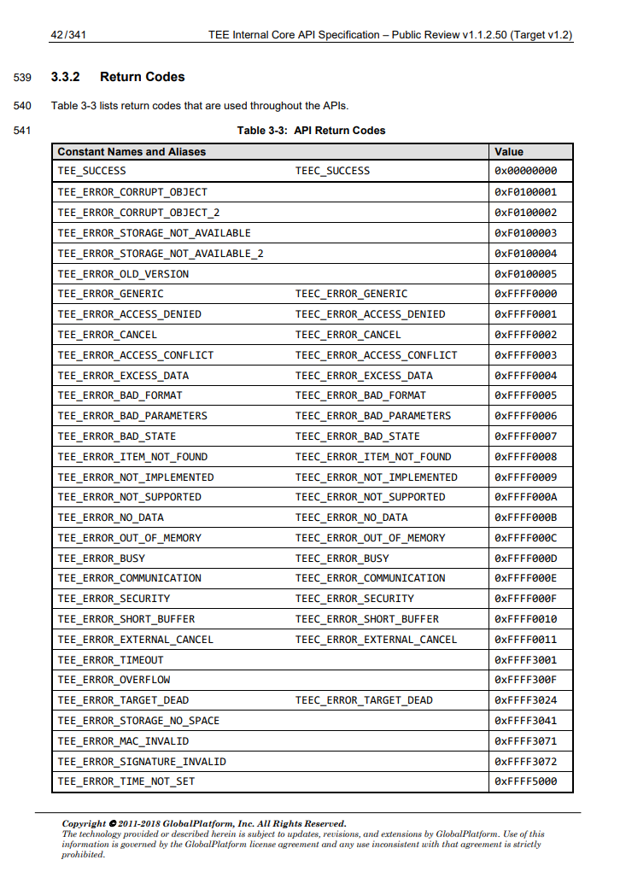

Common issues
python version mismatch
Jan 2024
Symptom:
/sw/ubuntu-22.04/python/3.10.11/bin/python3: /lib/x86_64-linux-gnu/libm.so.6: version `GLIBC_2.35' not found (required by /sw/ubuntu-22.04/python/3.10.11/bin/python3)
...
Cause: granger1/2 run Ubuntu 20.04, while python3 for Ubuntu 22.04 (as managed by the ``module'' system, /sw/...) somehow gets invoked. The newer python3 expects GLIBC versions that do not exist on Ubuntu 20.04
Solution: only use Python3 that comes with Ubuntu20.04. $PATH is clean, not containing anything like "/sw/...". Also unload any python ("module unload python..."). No conda env ("conda deactivate"). This should solve most of the problem.
FL: some errors were seen in "make buildroot", which I did not fully eliminate. It does not breaking the build.
(from sec world) Error: ... failed ffff000? from origin ?
The way to debug is to understand the optee error code definition ffff000? and its origin ?. See table below. Also GIYF. You may find the doc for developing CA and doc for developing TA exceptionally helpful. Search your error code, function name, etc in these two docs.

CA (e.g xtest, optee_example_hello_world) hangs
The secure world console shows "Loading TA ...." then nothing.
Is tee-supplicant running? ps aux|grep tee.
Manual launch by /usr/sbin/tee-supplicant -d /dev/teepriv0 Make sure it is running via ps, then retry the CA.
sometimes fs init failures seem to block it from launch. if top or ps fail to work, /procfs is likely not working. do mount -a and try again.
make run-only... xterm problems
/usr/bin/xterm: Xt error Can't open display; DISPLAY is not set etc. Can be strange even if xterm is not being launched.
Try to comment out $(call check-terminal) in build/qemu_v8.mk
Address already in use
When you run qemu (p3-run), the command line -serial tcp:localhost:XXXXX -serial tcp:localhost:XXXXX tells QEMU to listen on two ports for incoming GDB connection.
THE TWO PORTS MUST BE CHANGED to your choice (e.g. 58888/59999): if multiple students bind to the same ports, all but one will fail.
Here is our solution. When you run "source env.sh", it (cf: p3-gen-hash-ports) will generate two ports from a hash function of your user ID. The hope is that students will use different ports without collision.
$ source env.sh
set ports: normal world: 54198 sec world :54199
The two ports above are just examples. You should have different ports. If for some reasons, the ports are used (by yourself or by another user), qemu will fail to start.
To debug the issue, check if a port is in use by netstat --all | grep 54198 .
p3-run hangs, no xterm, etc.
This is also related to the tcp port issues above.
Check if any previous qemu instances hang. e.g.
ps aux|grep qemu
If so, kill them manually. Then retry the command.
(from normal world) optee_example_hello_world: TEEC_Opensession failed with code 0xffff0008 origin 0x3
(from sec world): init_with_ldeff:232 ldelf failed with res: 0xffff0008 <--- meaning item no found
xtests all failed.
meanwhile, the tee supplicant log:
cat /data/tee/teec.log
ERR [190] TSUP:load_ta:284: TA not found
Related functions: tee_supplicant.c: TEECI_LoadSecureModule() and try_load_secure_module().
Cause: * Make sure all TAs are in place (/lib/optee_armtz/...) * Make sure /lib/optee_armtz/ has right permission (755), allowing user "tee" to access. Otherwise TEE supplicant will fail. (THIS IS THE REASON)
xl6yq@granger2[optee-qemuv8]$ ll out-br/target/lib |grep optee_armtz
drwxr-xr-x 2 xl6yq fax 28 Apr 7 22:57 optee_armtz
Solution build/br-ext/package/optee_examples/optee_examples.mk add the chmod line
define OPTEE_EXAMPLES_INSTALL_TAS
@$(foreach f,$(wildcard $(@D)/*/ta/out/*.ta), \
mkdir -p $(TARGET_DIR)/lib/optee_armtz && \
chmod 755 $(TARGET_DIR)/lib/optee_armtz && \
$(INSTALL) -v -p --mode=444 \
--target-directory=$(TARGET_DIR)/lib/optee_armtz $f \
&&) true
endef
Related (but not our cause): https://github.com/mofanv/darknetz/issues/7
(qemu) failed to launch
 have you run the two 'nc' instances? are they still alive?
have you run the two 'nc' instances? are they still alive?
(qemu) qemu-system-aarch64: Could not find ROM image 'bl1.bin'
arm-tf missing. Rebuild it. ``make arm-tf''.
(qemu) qemu-system-aarch64: failed to load "Image"
Kernel missing.
regression_1000.c:(.text+0x3300): undefined reference to `sdp_basic_test'
Error: open session to target test TA failed ffff0008 3 Test failed!"
missing CFG_SECURE_DATA_PATH=y in make command
Failure to install dependencies of QEMU
If the installation fails, e.g. due to unmet dependency, it's likely that the source of your apt repository is not properly configured. A common cause is that you have previously installed packages from some third-party apt sources. Remove them from /etc/apt and do apt update.
shared_folder not found
$ make run-only QEMU_VIRTFS_ENABLE=y QEMU_VIRTFS_HOST_DIR=build/shared_folder
If the above command complains "shared_folder" not found, try passing an absolute path as the last argument
Include extra packages in rootfs?
make buildroot QEMU_VIRTFS_ENABLE=y CFG_SECURE_DATA_PATH=y \
BR2_PACKAGE_BUSYBOX_SHOW_OTHERS=y \
CFG_TEE_RAM_VA_SIZE=0x00300000 -j`nproc`
"No SOI" from SOD (secure world console)
meaning it fails to decode an image as .jpg. Can be benign if the image is not jpg, e.g. PNG.
TEE failed to allocate ptes...
Secure world: "E/TC:0 alloc_pgt:281 5 page tables not available"
Cause: insufficient pgt cache for nw/sw shared memory.
Solution:
optee_os/core/arch/arm/include/mm.pgt_cache.h
#define PGT_CACHE_SIZE 32
https://github.com/OP-TEE/optee_os/issues/2178#issuecomment-374671101
Failed to mount rootfs
A recent Linux kernel failed to mount the rootfs which is ext2. Related boot log:
[ 1.304029] uart-pl011 9000000.pl011: no DMA platform data │····································[ 1.309704] VFS: Cannot open root device "vda2" or unknown-block(0,0): error -6 │····································[ 1.310024] Please append a correct "root=" boot option; here are the available partitions: │····································[ 1.310863] 1f00 65536 mtdblock0 │····································[ 1.310980] (driver?) │····································[ 1.311461] Kernel panic - not syncing: VFS: Unable to mount root fs on unknown-block(0,0) │····································[ 1.311933] CPU: 0 PID: 1 Comm: swapper/0 Not tainted 5.16.0-gdbeb6ea978fc #1 │····································[ 1.312256] Hardware name: QEMU QEMU Virtual Machine, BIOS 0.0.0 02/06/2015 │····································[ 1.312730] Call trace: │····································[ 1.312864] dump_backtrace+0x0/0x1b0 │····································[ 1.313196] show_stack+0x18/0x68 │····································[ 1.313358] dump_stack_lvl+0x68/0x84 │····································[ 1.313523] dump_stack+0x18/0x34 │····································[ 1.313663] panic+0x164/0x324 │····································[ 1.313793] mount_block_root+0x130/0x20c │····································[ 1.313953] mount_root+0x1e0/0x214 │····································[ 1.314091] prepare_namespace+0x12c/0x16c │····································[ 1.314340] kernel_init_freeable+0x250/0x294 │····································[ 1.314621] kernel_init+0x24/0x130 │····································[ 1.314771] ret_from_fork+0x10/0x20 │····································[ 1.315194] SMP: stopping secondary CPUs │····································[ 1.315679] Kernel Offset: 0x516c3b920000 from 0xffff800010000000 │·······························�····[ 1.315912] PHYS_OFFSET: 0xffffdb4d00000000 │····································[ 1.316085] CPU features: 0x2,200018c2,00000846 │····································[ 1.316433] Memory Limit: none │····································[ 1.976015] ---[ end Kernel panic - not syncing: VFS: Unable to mount root fs on unknown-block(0,0) ]---
Kernel version: dbeb6ea97; 5.16.0
Strangely, the kernel config contains EXT2/3/4 as it should. No idea what caused the problem.
Some students reported success when they repack rootfs as ext4
Note that .repo/manifests/qemu_v8.xml does not specify the release of Linux (as oppposed to other projects)
...
<!-- linaro-swg gits -->
<project path="linux" name="linaro-swg/linux.git" revision="optee" clone-depth="1" />
So change that to an earlier version:
<project path="linux" name="linaro-swg/linux.git" revision="refs/tags/optee-3.10.0" clone-depth="1" />
Then repo sync ... you should be able to boot Linux fine.
Related dicussion:
- https://piazza.com/class/ky1ydg1ni7fty?cid=192
- https://piazza.com/class/ky1ydg1ni7fty?cid=190
"bash: line 4: build: command not found" (while buiding edk2)
stale edk2 config. The root cause of almost all edk2 build problems
make edk2-cleaner
which basically does:
mv edk2/Conf/BuildEnv.sh edk2/Conf/BuildEnv.sh.old
make edk2-clean
buildroot: ... external custom toolchain does not support SSP (stack protection)
Toolchain problem. test program for SSP failed to build. make sure toolchains/ are good, e.g. crt0.o must be there. rename or remove toolchains/, then
make toolchains -j2
other buildroot failures
If it's "host" packages, check versions of server libraries, toolchains, etc. Otherwise check the cross compiler toolchain.
qemu make clean failure
symptom
xl6yq@granger2 (master)[qemu]$ make distclean
/bin/sh: 1: cd: can't cd to /home/xzl/p3/optee-qemuv8-teachingonly/optee-qemuv8/qemu
find: ‘/home/xzl/p3/optee-qemuv8-teachingonly/optee-qemuv8/qemu/scripts/tracetool’: No such file or directory
cause: config-host.mak constains stale paths, which causes make distclean to fail. (make distclean is supposed to clean up config-host.mak!)
solution:
mv config-host.mak /tmp
-j20 seems ignored for some modules (edk2, buildroot)
TBD
ln: target '/u/xl6yq/tmp/optee-qemuv8/build/../out/bin/' is not a directory: No such file or directory
likely some targets failed to build (otherwise they will produce symlinks such as bl1.bin etc under out/bin)
cd build
make QEMU_VIRTFS_ENABLE=y CFG_SECURE_DATA_PATH=y CFG_TEE_RAM_VA_SIZE=0x00300000 arm-tf -j20
make QEMU_VIRTFS_ENABLE=y CFG_SECURE_DATA_PATH=y CFG_TEE_RAM_VA_SIZE=0x00300000 buildroot -j20
make QEMU_VIRTFS_ENABLE=y CFG_SECURE_DATA_PATH=y CFG_TEE_RAM_VA_SIZE=0x00300000 linux -j20
See which target fails and the error messages.
edk2: error F002: Failed to build module .... FileExplorerLib/FileExplorerLib.inf
Per the error message, do something like:
make -C optee-qemuv8/build/../edk2/BaseTools/Source/C
no symlinks (e.g. bl1.bin) under out/bin/ after a full make
See if this helps: force building the arm-tf target, which is responsible for those links...
make QEMU_VIRTFS_ENABLE=y CFG_SECURE_DATA_PATH=y CFG_TEE_RAM_VA_SIZE=0x00300000 -j20 arm-tf
(qemu) qemu-system-aarch64: -serial tcp:localhost:50324: Failed to connect socket: Connection refused
Make sure two "nc" commands are running. Check the port numbers
(qemu) qemu-system-aarch64: failed to load "rootfs.cpio.gz"
do you have rootfs.cpio.gz under out-br/images/? If not, make buildroot seems incomplete or fail. Try build it.
buildroot: "You seem to have the current working directory in your LD_LIBRARY_PATH environment variable. This doesn't work."
export LD_LIBRARY_PATH=
# make sure nothing
echo $LD_LIBRARY_PATH
(qemu) qemu-system-aarch64: failed to load "Image"
Linux kernel missing. Likely not built or linked. See out/bin/Image. If missing, force build:
make QEMU_VIRTFS_ENABLE=y CFG_SECURE_DATA_PATH=y CFG_TEE_RAM_VA_SIZE=0x00300000 -j20 linux
Linux build asks for configuration
Simply accept all default ones.
buildroot: "/home/bfr4xr/optee-qemuv8/build/../toolchains/aarch64/bin/aarch64-linux-gnu-ld.bfd: cannot find -los_test"
Need a dirty hack:
cd out-br/build/optee_test-1.0/ta
ln -sf os_test_lib 0os_test_lib
Then make buildroot...
Explanation: optee_test-1.0 has a bunch of CAs/TAs, including os_test, which depends on os_test_lib. For a reson that is beyond me, the dependency is not encoded in the build system. Instead, it seems to count on luck that shell enumerates os_test_lib before os_test and builds the former first. Apparently, on a shell that enumerates os_test before os_test_lib, the build will fail. Solution: force the shell to discover os_test_lib first...
TBD: fix this permanently
make edk2-clean: python complains lack of "UserDict"
It is a Python2 thing. Some edk2 library expects python2. Make sure you have it. It is ok that the default python is python3.
ModuleNotFoundError: No module named 'Crypto'
It's a python script complaining you don't have Crypto. To see if that's the case, do
python -c "import Crypto"
There shouldn't be any error. Solution:
sudo apt get install python-is-python3; then sudo apt get install python3-pycrypto to install Crypto for python3; lastly sudo apt install python-crypto to install it for python2. All needs to be done with root.
(FL: Above may need update)